量子コンピュータ上の Z₂ 格子ゲージ理論で閉じ込めを調べる
² INFN-TIFPA（イタリア）
³ Google Quantum AI（米国カリフォルニア州Venice）
⁴ ミュンヘン大学 物理学科・Arnold Sommerfeld理論物理学センター（ドイツ）
⁵ Munich Center for Quantum Science and Technology（MCQST、ドイツ）
連絡先：julius.mildenberger@unitn.it / philipp.hauke@unitn.it
非公式日本語訳 · arXiv:2203.08905v3（2025年12月2日版） · 原PDF：21ページ
原題：Probing confinement in a Z₂ lattice gauge theory on a quantum computer
原論文PDFに基づく学習用翻訳。本文、Methods、図1〜3・図S1〜S8の説明、脚注を訳し、数式と文献番号を保持した。図中のラベルおよび参考文献の書誌情報は原文表記。図はクリックして拡大できる。原著者による確認・公認を受けた訳ではない。原文の著作権は各権利者に帰属する。
概要
ゲージ理論は素粒子物理学の標準模型における基本的な力を記述し、物性物理学でも重要な役割を果たす。荷電物質や電気的ゲージ場などの構成要素は局所ゲージ制約に従い、この制約が、いまだ十分には理解されていない粒子の閉じ込めなどの重要な現象を生み出す。このような問題に対し、量子シミュレータは古典的手法では困難な課題に取り組める可能性がある。ゲージ制約を設計・実現することは非常に難しいが、量子計算の近年の進展により、ゲージ理論のデジタル量子シミュレーションが可能になりつつある。本研究では、超伝導量子プロセッサ上で 格子ゲージ理論の閉じ込めのダイナミクスをシミュレートする。電場にのみ結合する項を調整すると電荷の閉じ込めが生じる。これは、ゲージ制約が両者の間に生み出す強固な結びつきの現れである。さらに、ゲージ制約を から 対称性へ向けて変更すると、系のダイナミクスが凍結することを示す。本研究は、基礎となるゲージ制約が格子ゲージ理論のダイナミクスに課す制限を明らかにし、ゲージ制約を変更・保護する方法を示すとともに、多体相互作用に支配される他の模型の研究を促進する。
ゲージ理論の豊かな現象論は、その基礎となるゲージ対称性が定める局所制約と根本的に結びついている。この局所制約は、物質とゲージ場の自由度の相互作用を決定する。例えば、量子色力学の非可換ゲージ対称性は、相互作用によってクォークをグルーオンとともにハドロン内へ閉じ込める。また、量子電磁力学（QED）は、よく知られたGauss則という局所 対称性をもち、これが光子の質量がゼロであることと長距離Coulomb則の出現を担っている [1, 2]。ゲージ理論の格子離散化は、もともと素粒子物理学の非摂動的領域を扱うために用いられたが [1]、物性物理学でも、無秩序のない局在 [3]、量子多体スカー [4]、階段状の前熱化 [5] などの特異な現象の出現を記述する強力な枠組みであることが示されている。
格子ゲージ理論（LGT）で特に興味深い現象の一つが閉じ込めである。これは、ゲージ場が媒介する相互作用によって系のダイナミクスが制限される現象である。閉じ込めは束縛されたメソン励起を生み出し、場合によっては非可換エニオンや電荷の分数化を伴うトポロジカル相とも関係する [2]。動的な物質とゲージ場の両方が存在する場合、閉じ込めの問題は十分には理解されていない。その理由の一つは、例えば弦の張力の遮蔽を引き起こす動的電荷の微妙な効果にあり [6, 7]、もう一つは、一般のLGTを古典的手法で解くことの難しさにある [1, 8]。
近年、量子多体問題を古典的ハードウェアではなく量子的ハードウェアで解く、量子シミュレーションという別の計算の枠組みが登場している。汎用量子コンピュータは原理的には完全にスケーラブルな量子シミュレーションを実行できるが、現状の装置では規模とコヒーレンス時間が限られている [9, 10]。この状況のもとで、LGTは量子シミュレーションの対象として特に魅力的である [11, 10]。極めて豊かな物理を含むだけでなく、ゲージ対称性をハードウェア誤差の診断に利用でき、新しいエラー緩和方式の設計にも活用できるからである [12, 13, 14, 15]。
本研究では、超伝導量子チップ上の最大21量子ビットを用いて、 ゲージ対称性をもつLGTの幾何学的閉じ込めを実験的に調べる（図1a）。時間をTrotter分解によって離散化し、基本ゲートから系のハミルトニアンを構成することで、LGTのダイナミクスを実現する（図1b）。最も実装が難しく、アルゴリズムの中心となるのは、荷電物質とゲージ場の相互作用過程であり、図1cのように合成する。この3量子ビットゲートは、ハードウェア固有の2量子ビットゲートをわずか6個しか用いず、誤差がなければ完全にゲージ不変である。効率的な回路合成により、1 Trotterステップの深さを固有2量子ビットゲート8層に抑え、最大25 Trotterステップ、すなわち最大202の2量子ビットゲート深さに相当するダイナミクスをシミュレートできる。さらに別の実験では、 LGTに対応する局所生成子を模型のハミルトニアンに加え、局所 ゲージ対称性から ゲージ対称性へと制御しながら調整する。以下で示すように、基礎となるゲージ対称性を変更すると、電荷のダイナミクスが劇的に抑制される。
本研究は、物質とゲージ場が結合するLGTの量子シミュレーションに重要な一片を加えるものである。現時点で既存の実現例の多くは連続ゲージ群を対象としている [16, 17, 18, 19, 20, 15, 21]。離散的な ゲージ対称性についての先駆的な実験は、基本構成要素 [22] や摂動的な実装 [23] を扱っていた。本研究では、理想的な条件では完全にゲージ不変である非摂動的な分解を構築し、数十量子ビットでの閉じ込めのダイナミクスの観測、長い時間発展の検証、そして基礎となるゲージ対称性を調整する実験的に簡単な項の追加を可能にする。したがって本実験は、デジタル量子シミュレーションでゲージ対称性を制御し、離散ゲージ対称性をもつゲージ場に結合した物質の豊かなダイナミクスを研究する道を開く。
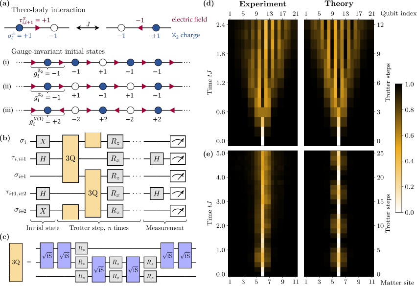
対象とする理論
ここでは図1aに概略を示す可換LGTを対象とする。荷電物質は1次元空間格子の格子点 上に存在する。Jordan–Wigner変換（Methods）を行った後の対応する演算子を、Pauli行列 で表す。電場は格子点間のリンク上に存在し、対応するPauli行列は である。対象のLGTは、次の各項からなるハミルトニアン に支配される。
| (1a) | ||||
| (1b) | ||||
| (1c) | ||||
実装上最も難しいのは、物質とゲージ場を結合する3量子ビット項 である。 は物質の静止質量を記述し、 は背景場の項である。この項は閉じ込めポテンシャルを生み出す。その大きさは、電場が偏極した領域の長さに比例するエネルギーコストによって測られる [22, 24, 25]（Methods）。物質–ゲージ場結合のため、この線形ポテンシャルは電荷にも作用する。メソンが形成され、ゲージ不変なフェルミオン相関関数は距離の関数として指数関数的に減衰する [24, 26, 25]。その結果、 では理論は非閉じ込めである一方、 では電荷が閉じ込められる。この模型における閉じ込めをさらに明らかにするため、Methodsでは、フェルミオンの運動エネルギー、静止質量、背景場の複雑な相互作用に支配される線形の弦の張力を解析的に導出する。
LGTの本質は局所対称性の保存にある。ハミルトニアン の場合、これは ゲージ対称性である。この対称性は、 の保存、すなわち 、 によって表される。以下では、エネルギー罰則項 [12] によって、 ゲージ対称性をQEDを支配するものと同様の近似的な ゲージ対称性へ調整する方法を示す。その対称性生成子は であり、Gauss則の格子版に対応する。LGTにおける基本現象の豊かさを生み出しているのは、これらの局所ゲージ対称性である。シミュレーションするすべての時刻 でこの局所対称性を保存することが、ゲージ理論の量子シミュレーションの中心的な課題となる。
ハードウェア上の実装
本実装では、1次のTrotter–Suzuki分解を用いて、 が生成する目的の時間発展演算子を合成する。
| (2) |
ここで はTrotterステップ数、 はTrotter時間刻み、 である。近年解明されたTrotter化ダイナミクスのカオス–規則的運動間の転移 [27, 28] を利用することで、 という大きなTrotter時間刻みでも忠実に計算できる。これにより、実験装置のデコヒーレンス時間内に、十分に長いシミュレーション時間へ到達できる（Methodsおよび図S2）。
実験では、Sycamoreクラスの超伝導量子プロセッサ上の最大21個のgmon量子ビットに LGTを実装する（Methods）。このチップは、単一量子ビットの 回転、– 平面内の任意の軸の周りの回転、および に近い2量子ビットゲートを固有の操作として備えている。実装上の主要な課題は、 を構成する多量子ビットゲートである。そのために、6個の ゲートと 層の単一量子ビット 回転を用いる効率的な実現方法を設計した（図1c）。後者は実行時間を要しない（Methods）。比較のために述べると、任意の3量子ビット回路の分解には最大20個のCNOTゲートが必要となる [29]。隣接する3量子ビット組に作用するゲートを並列化すれば、1 Trotterステップを、単純に予想される12層ではなく、 ゲート8層の深さに圧縮できる（Methodsおよび図S1）。各初期状態（図1a）は、基準状態 から単一量子ビット回転を用いて準備する。 は量子ビット数である。回路深さを圧縮した結果、1 Trotterステップに要する時間は合計256 nsとなり、最大25 Trotterステップの実験が可能になる。状態準備と測定のための基底回転を含め、1回の実験ショットの総実行時間は最大6.5 sである。所定のTrotterステップ数の後、量子ビットを計算基底で測定する（各配置について50,000〜200,000ショットを平均する）。この測定から、物質密度、電場の強さ、 および ゲージ不変性の破れの程度など、幅広い観測量が得られる。データ品質を高めるため（詳細はMethodsと図S3）、周期的な操作列を使ってエンタングリングゲートのパラメータのコヒーレント誤差とそのドリフトを特徴づけ、補正するFloquet較正 [30] を用い、チップ上の 〜 種類の量子ビット配置にわたって平均する。さらに、物質の全電荷保存と Gauss則を破る装置誤差を、理想的には保存されるこれらの量に基づく事後選択で緩和する。これは格子点ごとの読み出しにより可能になる。この事後選択は、読み出し誤差の潜在的な影響も大幅に減らす。見逃されるのは、近接する3量子ビットにわたる相関した誤差だけだからである。
Z₂ LGTにおける閉じ込め
対象LGTの閉じ込めを最初に調べるため、図1a(i)の状態に系を初期化する。この状態は、中央の格子点に一つの物質欠陥をもち、電場は完全に偏極している。電荷欠陥の運動は電場の変化を伴い、 項のため、移動距離、すなわち電場が反転した領域の長さに比例するエネルギーコストを必要とする [26]。したがって、閉じ込め領域では欠陥が生成された空間領域内に留まると予想される。この効果を調べるため、、、 としてハミルトニアン によるクエンチを行い、その後のダイナミクスにおいて欠陥の位置と電場の励起を追跡する。その際、それぞれ局所 電荷 と を用いる。
図1d,eの実験データが示すように、 という小さな値では、 項の作用によって電荷欠陥は急速に広がる。このパラメータ領域では、ここで調べた距離よりも大きな距離で初めて閉じ込めの効果が顕著になる。ゲージ不変性によって、電荷の運動に応じて電場の期待値 も変化する。 を大きくすると、 の時間スケールよりはるかに長い時間まで発展させても、欠陥は狭い領域に閉じ込められたままとなる。実験データは理論とよく一致する。実験で観測されるダイナミクスと、理想化したノイズのない理論との差異は、微視的なノイズ模型で理解できる（Methodsおよび図2・図3）。小さな空間的非対称性は、 のTrotter分解で と を順次適用することから生じる（図1b参照）。さらに、アルゴリズムで選択した一部の回路配置（Methods）が、偶然にも系の片端に偏って高いノイズ率をもつことで、この非対称性が強められる。図1eでは、装置誤差が存在しても閉じ込めが頑健であることを示すため、かなり長い時間までのデータを表示した。長時間でのコントラストの低下からもそのことが分かる。注目すべき点として、この実験で調整するパラメータはゲージ場にしか結合しない。したがって、電荷の閉じ込めが純粋に物質とゲージ場の結合の結果として現れることが示されている。
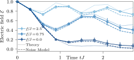
閉じ込めをさらに調べるため、物質の充填率を半分として、図1a(ii)の状態に系を初期化する。図2は、周期境界条件を課した8個の物質格子点と、それに対応する8個のゲージ場について、次の平均電場のダイナミクスを示す。
| (3) |
初期状態では電場は完全に偏極している。物質–ゲージ場結合 により、物質がホップするたびに、関係する格子点間の電場が反転する。したがって、非閉じ込めのダイナミクスでは平均電場は最終的に消失する。対照的に、 を増大させると電荷は閉じ込められ [22, 24]、電場は初期配置に近いまま保たれる。この基本的な振る舞いは、より長い時間スケールやノイズのもとでも持続する（Methodsおよび図S5）。これらの結果は、広い空間領域にわたって電場の偏極を変える際に必要となるエネルギーコストを示している。
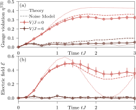
ゲージ制約の変更による凍結
最後に、電荷と電場の配置を凍結する全く別の機構を示す。ここでは模型パラメータの調整ではなく、基礎となるゲージ対称性の変更によってダイナミクスを劇的に抑制する。
式(1a)のゲージ場–物質結合を、次のように一見単純に変更することを考える。
| (4) |
丸括弧内の項は、Bloch球の 方向のスピン上昇演算子に対応する。ハミルトニアン は ゲージ対称性を獲得しており、、 である。ここで図1a(iii)の初期状態を と記す。この状態は と の両ゲージ対称性に整合し、固有値は および である。 のもとで時間発展させる場合、保存されるのは ゲージ対称性だけである。また、電荷は関係するリンクのゲージ場を反転させながら移動できる。一方、 を のもとで発展させると、 ゲージ対称性が保存されるだけでなく、電荷の運動も阻止される。 の作用によって反転できるゲージ場が存在しないためである。
この現象を実証するため、ゲージ生成子 に比例する項を追加して、有効な ゲージ対称性を生成する [12]。類似の対称性保護方式は、実験でLGTを摂動的に実現するために用いられてきた [19, 23, 15]。ここでは、この方式を元の 理論から 理論への調整に用いる。
重要な点として、用いる項 は単一量子ビット操作のみからなり、 と の実装に既に使われている操作に吸収できる（Methods）。規格化された係数列 は、適合条件を満たすもの（Methods）を選んでもよいし、単純な交代列を用いてもよい（図S8）。 は質量項および背景場項と可換だが、ゲージ場–物質結合 とは競合する。直感的には、 が ゲージ場演算子 を 軸の周りに高速回転させると考えられる [13, 12, 14]。そのため、時間平均の意味で、 は – 平面内の円の 対称性を有効に獲得する。したがって、 が大きいとき、近似的に が得られる [12]。注目すべきことに、 という小さな値でも顕著な効果を観測するのに十分であることが分かった。
系を に初期化し、 理論 だけでクエンチすると、 ゲージ対称性は急速に破れる。その破れを次の量で定量化する。
| (5) |
これは図3aの薄い曲線に対応し、 はゲージ対称性の破れの理論上の最大値が1になるよう規格化する係数である。対照的に、適度な強さの保護項 を加えると、 ゲージ対称性の破れは全時間発展にわたって小さな値に抑えられる（濃い曲線）。実験データとノイズのないシミュレーションとの差異は包括的なノイズ模型で説明でき（Methods）、その主要因は ゲートに付随する寄生的な制御位相である（Methodsおよび図S7）。
基礎となるゲージ対称性のこの変更は、系全体のダイナミクスに劇的な影響をもたらす。 理論（小さな ）では電荷は自由に移動でき、電場にも強いダイナミクスが観測される（図3bの薄い曲線）。一方、 によって対称性を に近づけると、電荷は凍結し、電場は全時間発展にわたって初期値の近くに留まる。
今後の展望
本研究は、離散対称性をもち、物質とゲージ場が結合するLGTにおける幅広い現象を研究する道を開く。理想的な対象には、量子多体スカー [4] や無秩序のない局在 [3] などの特異な非平衡現象がある。引用した数値研究が示唆するように、これらの効果の重要な特徴は、既に の系サイズと 程度の時間に現れる。したがって、回路深さをわずか 倍に増やすだけで、ここで示した実装能力によってこれらの現象に到達できる可能性がある。より長いコヒーレンス時間を目指すこの取り組みにおいて、ゲージ理論が与える強相関系は、高度なエラー緩和戦略の理想的な試験場となる。例えば、確率的エラーキャンセレーション [31]、ゼロノイズ外挿 [32, 31]、読み出しエラー緩和 [33, 34]、学習に基づく緩和 [35, 36]、純度制約 [37, 38]、寄生ゲートの影響を緩和する手法 [39] などが挙げられる。初期時間の振る舞いと長時間のダイナミクスを結びつけるには大きな計算上の困難があることから、ゲージ理論の熱化も重要な未解決課題であり、例えば重イオン衝突のような高エネルギー実験に深く関係する [8]。この種の問題を明らかにする最初の一歩は、近年、 ゲージ理論をシミュレートする光格子系で踏み出された。そこでは、わずかな回数のゲージ不変なホッピング事象だけで、熱化の主要な特徴が既に観測された [40]。
多量子ビット相互作用と局所制約を正確に設計する必要性は、装置の現在の限界を押し広げ、新しいエラー緩和プロトコルの開発を促しており [19, 13, 14, 23, 15]、現在この分野を強く推進している。その一例が、本研究で実装した方式である [12]。このような方式を、非可換ゲージ理論を含むより複雑な状況へ一般化する有望な提案も存在する [41, 13, 14]。
このような研究は、他分野との興味深い相互作用を生む可能性もある。例えば、Gauss則に基づく事後選択は、誤り訂正符号のシンドローム測定に類似している [42, 43]。LGTの直接的な文脈を越えて、本研究で設計した、あるいはそれに類する3体ゲート（Methods）は、多様な物理的状況の重要な構成要素である。そこには、クラスターIsing模型 [44]、トポロジカル相転移 [45]、スピンカイラリティ [46]、多者間エンタングルメント [46]、さらには非ストカスティック量子アニーリングとパリティ量子アニーリング [47] が含まれる。
謝辞
Google Quantum AIチーム、特にEric OstbyおよびMarkus Hoffmannの支援と議論に感謝する。また、Haifeng Langとの議論にも感謝する。Google Quantum AI Early Access Programへの参加に謝意を表する。本研究のすべての量子計算は、このプログラムのもと、Cirq [48] を用いて二つの大陸間で遠隔実行した。その他の数値シミュレーションはqsim [49] を利用して行った。本研究は、欧州連合Horizon 2020研究・イノベーションプログラムのもとで欧州研究会議（ERC）から助成（助成契約番号804305、StrEnQTh、および948141、SimUcQuam）を受けた。また、欧州連合Horizon 2020研究・イノベーションプログラムのQuantERA II Programme（助成契約番号101017733）、欧州連合Horizon Europe研究・イノベーションプログラム（助成契約101080086、NeQST）、ドイツのExcellence Strategyに基づくドイツ研究振興協会（DFG、EXC-2111 – 390814868）、イタリア大学・研究省（MUR）のDAVNEプロジェクトに対するFARE助成（R20PEX7Y3A）、Google Research Scholar Award ProGauge、トレント自治県、およびQ@TNから支援を受けた。Q@TNは、トレント大学、FBK-Fondazione Bruno Kessler、INFN-National Institute for Nuclear Physics、CNR-National Research Councilの共同研究所である。
Methods（方法）
1 対象とする格子ゲージ理論（LGT）
1.1 Z₂ 格子ゲージ理論
本文で考えた1+1次元の LGTは、フェルミオン物質を用いる、より一般的な定式化と等価である。そのハミルトニアンは次のように記述される [22, 26]。
| (6) | ||||
ここで、（）はフェルミオンの生成（消滅）演算子である。文献 [22, 26] などと比較すると、 のstaggeredフェルミオン質量項を追加している。この項は系の対称性と両立し、以下で論じる 理論との接続を可能にする。その理論では、この項は通常含まれる。物理的には、偶数（奇数）の物質格子点上の粒子（反粒子）に正（負）の静止エネルギーを与えるものと解釈できる。
LGTのフェルミオンによる定式化では、対称性生成子は次式で与えられる。
| (7) |
ここで は、物質格子点 に接続するすべてのリンクにわたる積を表す。本研究の1+1次元の場合、これらは と である。ゲージ対称性は、 と、生成子の固有値 の保存、すなわち 、 に等価である。
式(7)の生成子について固有値 をもつゲージ不変な初期状態からの、ゲージ対称性の破れは次式で定量化する。
| (8) |
ここで は、ゲージ対称性の破れの可能な最大値が1になるよう規格化する。この量は、 で定義される目的の超選択セクターからのHilbert空間内の平均的な距離と理解でき [50]、値がゼロでないことはゲージ誤差の存在と等価である。
Jordan–Wigner変換により、フェルミオンの自由度をスピン で置き換える。
| (9) |
ここで である。この変換はフェルミオンの正準反交換関係を保ち、本文に示したハミルトニアン とゲージ生成子を与える。
1.2 U(1) 格子ゲージ理論
staggeredフェルミオンを用いた1+1次元QEDのKogut–Susskindハミルトニアン形式を考える [51, 52]。
| (10) |
と の役割は の場合と同じである。最後の項は電場のエネルギーを与える。 は背景場であり、この理論ではトポロジカルな 角と等価である [53, 54]。電場 と平行移動演算子 は、次の交換関係を満たす。
| (11) |
この模型は、次の生成子をもつ連続的な ゲージ対称性を備える。
| (12) |
が成り立ち、生成子の固有値 、すなわち は、式(10)による時間発展で保存される。
量子リンク模型（QLM）の形式 [55] では、 としてゲージ場を 、 で表せる。これは系の対称性と式(11)の交換関係を保つ。式(9)と同様にJordan–Wigner変換を再び適用すると、次式を得る。
| (13) |
ここでは を用い、定数項を無視している。ゲージ場に対して 、、したがって となる基底回転を行い、定数を と再定義すれば、本文に示した ゲージ理論と生成子が得られる。
式(12)の生成子について固有値 をもつゲージ不変な初期状態からの、ゲージ対称性の破れは次式で定量化される。
| (14) |
ここで は、ゲージ対称性の破れの可能な最大値が1になるよう規格化する。
1.3 閉じ込め
動的な物質をもつ相互作用するゲージ理論で、どのような場合に閉じ込めが生じるかという問題は極めて非自明である。例えば、式(10)のハミルトニアンの連続極限に対応するSchwinger模型では、動的フェルミオンが二つの試験粒子間の弦の張力を遮蔽し、閉じ込めを抑制できる [56, 6, 7]。具体的には、質量摂動論の範囲で、電荷 をもつ試験粒子の弦の張力は に比例する。したがって、動的フェルミオンの静止質量がゼロの場合、および試験電荷が任意の整数の場合に消失する。後者の振る舞いの理由は、トポロジカルな 角を だけ回転させたときの真空の周期性にある。 角は背景場に対応し［式(10)参照］、その背景場は境界電荷 が生み出すと考えられる。ここで一対の試験粒子を系の端まで移動させると、追加の境界電荷 が生じる。 が整数なら、この電荷は 角を の整数倍だけ回転させることで吸収できる。その回転で基底状態エネルギーは不変なので、整数の試験電荷を無限遠へ移動させてもエネルギーを要せず、弦の張力はゼロになる。背景場の追加に対する基底状態の周期性が失われると、この議論は成り立たなくなり、整数試験電荷と非整数試験電荷の間のこの根本的な違いはなくなる。これは、 のQLM［式(13)も参照］と、本研究で考える LGTで起こる。
ここで扱う LGT［式(6)］については、 になれば直ちに閉じ込めが生じると論じられている。そのことは、例えば距離に対するフェルミオン相関関数の指数関数的減衰や、Friedel振動の空間周期の変化によって示される [24, 26, 25]。これは 項が生み出す線形ポテンシャルによって起こると理解でき、文献 [22, 25] では の極限における孤立したフェルミオン二量体について論じられている。この状況は本文の図1に対応する。そこでは物質二量体の長さは、動的な欠陥と、鎖の中央にある静的背景電荷との距離に対応する。中央ではGauss則の固有値が に切り替わっている。以下では、フェルミオン充填率が半分のセクターについて、この議論を精密化する。
開放境界条件のもとで、背景電場 が系に入る、式(6)の の基底状態を考える。フェルミオン充填率が半分で、 Gauss則が となるセクターを選ぶ。 または の極限では、基底状態は系全体を貫く完全に偏極した電場をもち、 となる。ここで は の正／負の固有状態を表し、 は占有／空の物質格子点を表す。灰色は、対象の系に外部から入る境界電場を表す。 個の物質格子点と、それらの間の 本のリンクからなる系では、 の2次摂動論の範囲で、この状態のエネルギーは である。
次に、この状態に加えた一対の電荷のエネルギーを、さまざまな電荷間距離で調べる。簡単のため、系のすぐ外側の境界に静的な電荷対を加える。これは、系に入る電場の状態を反転させることに等価である。 かつ の極限では、Gauss則 に従う新しい基底状態は となる。すなわち、電荷は以前と同じ交互の配列に留まり、電場の反転が系に入る背景電場を補償する。 の2次摂動論では、この状態のエネルギーは である。一方、 かつ の極限では、電荷が背景電場を完全に過剰遮蔽する方がエネルギー的に有利となり、 という状態になる。この状態のエネルギーは である。
したがって、ホッピングが小さい極限では、基底状態に加えられた距離 だけ離れた電荷対のエネルギーは次式で与えられる。注1：連続極限が明確に定義されるゲージ理論では、ホッピングと格子間隔 の関係は である。そのため、連続極限 に近づくと、摂動論による議論が破綻する可能性がある。ここでは純粋に格子理論の振る舞いに関心がある。
| (15) | ||||
| (16) |
すなわち、電荷対の生成に伴うエネルギーコストは距離に比例して増大する。ここで考えたゲージ対称性と粒子数のセクターでは、得られる弦の張力は、それぞれ （）および （）である。興味深いことに、 と のうち小さい方のパラメータがゼロになると、これらは消失する。また、古典的なCoulomb則から予想される （本研究では ）とも大きく異なる。特に、ハミルトニアンのすべてのパラメータへの非自明な依存性は、この模型の弦の張力が複雑な量子多体的性質をもつことを示している。
本文では、この閉じ込めをもたらす線形ポテンシャルが、模型の非平衡ダイナミクスにどのように現れるかを示すことに関心がある。例えば図1と図2では、偏極した初期値から電場を反転させる際の大きなエネルギーコストが、試験電荷の広がりを制限し、電場を初期値に留める様子が見られる。模型の弦の張力を直接求めることも興味深い。そのためには、基底状態エネルギーからの、試験電荷を生成するためのエネルギーコストを測定すればよい。これは、例えばSchwinger模型の文脈で文献 [7, 58] に論じられているように、断熱的状態準備を用いる量子シミュレータで実現できる。特にこのような手法により、、、 が競合する難しい非摂動的領域に、上の議論を拡張できる可能性がある。
2 ハードウェア
文献 [59, 30] などで説明されているSycamoreクラスの超伝導量子チップに、対象のLGTを実装する。チップは正方格子の配置をもち、物質格子点とゲージリンクを交互に割り当てることで、量子ビットを1+1次元LGTの自由度へ自然に対応づけられる。具体的には、それぞれ 個および 個の量子ビットを備えるRainbowチップとWeberチップを用いる。そのうち、周期境界条件では最大16量子ビット、開放境界条件では最大21量子ビットを使用する。実験は、自動較正手順によって較正された装置に対して、クラウド経由で遠隔実行した。
Sycamoreクラスの量子チップは、 軸の周りの任意の単一量子ビット回転（実行時間なしで仮想的に実装可能）と、– 平面内の任意の軸の周りの回転を固有の操作として実装する。後者のゲート時間は で、ゲート当たりの平均誤差率は約 である。また、これらのチップは の形に近い固有2量子ビットゲートを備える。 は に近く、 であるため [30]、最低次ではこのゲートを ゲートで近似でき、ゲート当たりの平均誤差率は1〜1.5%である。ただし、状況によっては寄生的なC-phase項 がシミュレートされるダイナミクスに大きな影響を与え [60, 61, 30, 62, 63]、本実験ではゲージ不変性を損なう可能性がある。しかし、今回の大半の状況では、ゲージ不変かつ電荷保存の部分空間への事後選択によって、この種の誤差を十分に抑制できた。図3の状況、特に では、図S7に示す寄生的C-phase項の数値シミュレーションから、この項が当該部分空間内のダイナミクスにも望ましくない偏差を引き起こし得ることが分かる。この数値シミュレーションでも、通常どおり読み出し時にゲージ不変かつ物質の全電荷が保存される部分空間へ射影している。今後、このような寄生項を緩和する戦略 [39] によって、到達可能なシミュレーション時間をどこまで改善できるかを検証することは興味深い。ここでは、寄生位相を考慮した再分解によってゲート列が長くなり、新たな誤差項が導入されることを避けるため、3量子ビットゲートを可能な限りコンパクトに保つことを選んだ。
もう一つの重要な誤差は読み出しに由来する。そのチップ全体での中央値は、 状態で 程度、 状態で 程度である（図S4も参照）。ゲージ不変部分空間への事後選択は、この種の誤差に対しても非常に有効である。検出を免れるには、二つの重なり合うGauss則生成子に関係する隣接3量子ビットで、誤差が同時に起こらなければならないためである。このような相関した読み出し誤差は、誤差確率の3乗のオーダーに抑えられる。事後選択の効果の例として、図2の初期時刻、すなわち状態準備直後のデータでは、理想値からの偏差はわずか であり、個々の読み出し誤差よりはるかに小さい。
使用したハードウェアのより包括的な説明は、文献 [59] とその補足資料に示されている。本ハードウェアに存在する誤差の種類の詳細は、Methods §7で述べる。
3 量子回路の補足詳細
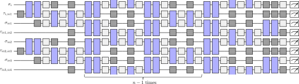
図1b,cの単一量子ビット回転はSycamoreチップで自然に実現できるため、実装の鍵となる課題は、物質–ゲージ場結合を単一量子ビットゲートと2量子ビットゲートへ分解することである。この分解は次のように実現できる。
| (17) |
ここで 、 は物質格子点を表す量子ビットのラベルであり、それらはリンク上のゲージ場を表す量子ビット を介して接続される。また、 はiSWAPゲートの平方根（）を表す。後者は 回転を除けば固有ゲート と等価であり、 が成り立つことに注意すると有用である。
のような任意の3量子ビットユニタリ演算の生成子は、関係する3量子ビットに作用する3個のPauli行列の積、およびそれより少ない演算子の積へ分解できる。今回の3量子ビットゲートは、ゲージ不変なホッピングという特定の物理的解釈をもつため、その生成子は同じ強さの二つの3量子ビット演算子（XZXとYZY）だけからなるハミルトニアンである。さらに、この特別な3量子ビットゲートは、フェルミオンの基底変換としても解釈できる。2量子ビットのフェルミオンシミュレーションゲート、すなわちMethods §2で述べた任意の に対する固有2量子ビットゲートのより広い族と、単一量子ビットの 回転は、Jordan–Wigner変換を通じて、それぞれ2モードおよび1モードの単一粒子フェルミオン基底変換に対応づけられる。これらを組み合わせることで、ここで考える3量子ビットゲートを含む、任意の単一粒子フェルミオン基底変換に対応する多量子ビットゲートを構成でき、対象ユニタリ演算の次元を実効的に低減できる。生成子がもつこの豊富な構造は、上記の効率的な分解の発見に役立ち、対応するユニタリ演算を現状の装置で実装可能にする。他の固有ゲート集合についても、同様に効率的な分解が見つかる。例えば、ゲージ不変なホッピングは6個のCNOTと単一量子ビット回転で分解できる。生成子に同程度の構造をもつ他の3量子ビットゲートについても同様である。例えば、さまざまな応用で重要となる が生成するゲート [46, 44, 47, 45] は、4個のCZゲート、または6個の ゲートで実装できる。
具体的な実装では、デコヒーレンスを抑えるため、物質–ゲージ場結合の実行時間をできるだけ短くすることが望ましい。また、待機中の量子ビットはクロストークや低周波ノイズによる誤った 回転を受けるため、量子ビットの待機を避けるべきである。このため本実装では、可能な限り隣接ゲートを並列実行して回路を圧縮する。さらに、待機中の量子ビットにはランダムに選んだ角度によるスピンエコー列を追加する。ゲート列全体の概略を図S1に示す。
各図で比較に用いる理論予測は、これらの量子回路を通じて多体波動関数を数値的に厳密に時間発展させて得たものである。
4 大きなTrotter時間刻みの利用
原理的には、関心があるのは連続時間におけるLGTのダイナミクスのシミュレーションである。近年の研究が示すように [27, 64, 65, 28]、そのために、最悪の場合の評価 [66] から予想されるような、式(2)のTrotter時間刻みをゼロにする極限 を取る必要はない。むしろ、Trotter化したダイナミクスを周期的なパルス列として捉えれば、周期駆動系の手法を用いて、規則的な量子ダイナミクスとカオス的な量子ダイナミクスの間の急峻なクロスオーバーを特定できる。規則的な領域では、系のダイナミクスは の場合から摂動的にしかずれない。有限系での数値的検証により、規則的な領域が驚くほど大きいTrotter時間刻みまで広がり、その効果が実質的に無限の時間まで保たれることが示されている [27, 64, 65, 28]。これにより、大きな を用いても、連続時間のダイナミクスを制御された形でシミュレートできる。
図S2では、ここで考える LGTについて、この効果を数値的に調べる。（a）は電場 の時間発展を示す。Trotter時間刻みを小さくすると、理想的な連続時間の曲線（）へ急速に近づく。（b）は電場の偏差の中時間領域での平均を示す。これは と定義され、 は特定のTrotter時間刻み に対するステップ数、 は最終発展時刻である。小さな では、偏差は に従って摂動的にしか増加しない（文献 [27] も参照）。この追加データが示すように、、さらにそれ以上という大きなTrotter時間刻みでも、摂動的で規則的な領域に属する。本量子シミュレーションでは を用いることで、Trotter化誤差を制御可能な水準に保ちながら、所定のTrotterステップ数 で十分に長いシミュレーション時間 に到達する。
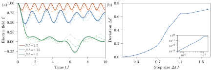
5 量子ビットの選択
各状況について、複数の量子ビット配置、すなわち所定の長さの鎖または環の結果を平均して誤差を低減する。量子ビットとゲートの性能は位置と時間の両方で変わるため、その実験セッションで良好な性能を示すものを特定することが重要である。読み出し、単一量子ビットゲート、2量子ビットゲートの較正データは、特に性能が悪い量子ビットの特定には役立つが、最良の量子ビット群を選び出すことはできない。そこで段階的な方法を用いる。セッションの開始時には、較正データを用いて、誤差率が特に高いと判定された量子ビットと2量子ビットゲートを除外する。考えられる配置、本研究では鎖または環の数を、性能検証が可能な数まで減らすため、較正データを入力とする簡単なコスト関数も用いる。その後、所定のパラメータ集合に対する最小模型を用い、残った量子ビット集合の候補から適切な組を選ぶ。セッション中の時間依存のドリフトに対処するため、セッション開始時のテストで良好だった量子ビット集合に限定し、実験の合間に最小模型のテストを繰り返す。この手順により、図1d,eでは 本の量子ビット鎖、図2と図3では周期境界条件をもつ 個の環を選び、そこで実験を実行して平均する。図の誤差棒は、異なる回路配置の結果にわたる1標準偏差を表す。理想的なダイナミクスが大きく振動する状況では、小さな誤差が異なる実現間の大きな偏差につながり、そのため誤差棒が大きくなり得る。一方、理想的なダイナミクスが定数の周りの小さな振動だけを示す場合や減衰する場合には、実現間の小さな違いの影響はそれほど大きくない。
6 事後選択
局所ゲージ対称性は、エラー緩和にも有効な道具となる。量子誤り訂正で用いられるスタビライザ [42, 43] と同様に、この局所保存則を破る誤差はすべて事後選択によって特定できる。これにより、シミュレーションの品質を大幅に改善できる。
実装する回路は、設計上 ゲージ対称性を尊重する。したがって、式(7)の生成子の固有値が初期状態と異なる実験ショットは、忠実な結果ではないと分かる。これは、式(8)のゲージ対称性の破れがゼロでないことに等価である。さらに、本実装では全 電荷 も理想的には保存されるはずなので、事後選択にこれを利用して、誤った実験結果をさらに排除できる。
全電荷保存は量子シミュレーションで一般的に事後選択の基準として用いられているが（例えば文献 [16, 30, 15]）、ゲージ対称性が与える、より細かな局所保存則によって、はるかに大きな改善が得られることが分かった（図S3参照）。考えられる理由は次のとおりである。例えば と という離れた格子点で起こる二つの電荷保存を破る誤差は、互いに相殺し、全電荷を保存することがあり得る。しかし、Gauss則生成子 と の非保存によって、それらを検出できる。
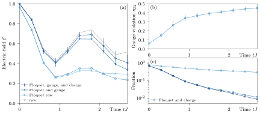
7 ノイズ模型による計算
典型的な較正データを用い、本実験で使用するチップ群に合わせたノイズ模型を構築する。この模型は、Pauliゲート誤差、熱ノイズ、コヒーレントな2量子ビットゲート誤差、読み出し誤差を考慮する。単一量子ビットゲートと2量子ビットゲートのPauliノイズチャネルは、密度行列 の次の写像で記述する。
| (18) |
ここで は、その個々のゲートで誤差が発生する確率であり、 は恒等演算子を除く 個のPauliゲートである。 は、誤差のあるゲートに関与する量子ビットの数を表す。
熱ノイズは、冷却演算子 と位相緩和演算子 で特徴づけられる。（）は量子ビットの緩和時間（位相緩和時間）であり、 である。これらから、次のLindblad超演算子が得られる。
| (19) | ||||
| (20) |
これらは各ゲート層の後に、その実行時間を考慮して適用する。
コヒーレント誤差の主要な原因は、理想化した2量子ビット ゲートを、励起数を保存する次の一般化で拡張することによって表される。
| (21) |
誤差のない場合、理想的な2量子ビットゲートは として得られる。本実験では、Floquet較正と単一量子ビットの 回転による補正の後、 は無視できるとみなす。そのため主な誤差は、隣り合う励起の部分空間だけに作用する寄生位相 に由来する。この位相は本実験で特に重要となる。初期化の段階ですでに、計算基底での励起の充填率が、図1a(i)では1/4を超え、(ii)と(iii)では1/2となるほど、多数の励起が存在するためである。
読み出し誤差は、回路の最後に適用する一般化振幅減衰チャネルによってモデル化する。
| (22) |
ここで、各演算子は次のとおりである。
| (23) |
と は、 を と誤読する確率 、および を と誤読する確率 から、 および によって定める。ノイズ模型のパラメータには、各量子ビット／結合器ごとに異なる値を用い、このハードウェアの中央値の性能を表す実際の較正データから取得する。その値は図S4に示す。実験日によってはこの中央値からの変動が見られ、例えば、ある実験セッションで誤差率がわずかに低くなることもある。
上記のノイズ模型を用いて、回路の多数の軌道 をシミュレートする。使用するチップに固有の不均一性を扱うため、量子回路への階乗個に及ぶ割り当て候補から、量子ビットと結合器をランダムに選ぶ。各割り当ては、すべての回路深さについて一度ずつ使用する。実験での量子ビット／結合器の選択と割り当て平均の手順の効果を定性的に取り入れるため、ノイズ模型内で候補となる量子ビットを性能の良い半分に制限する。ただし、いずれの場合も少なくとも問題のサイズを満たす数は確保する。また、実験の1次元配置に対応させ、2量子ビットゲート数も同じに保つ。
実験で行う対称性検証（Methods §6参照）を考慮し、ゲージ不変かつ電荷を保存する対称性部分空間 に、 として射影する。 本のノイズ軌道から、観測量 の期待値を次のように得られる。
| (24) |
この式は、軌道に基づく頻度主義的な密度行列を次式のように構成し、
| (25) |
それを対称性を保存する部分空間に射影し、
| (26) |
期待値 を計算することから導かれると理解できる。実験における測定結果のサンプリングと比較すれば、予想される次の表式が得られる。
| (27) |
ここで、次のように定義する。
| (28) |
は取得したサンプルの総数、 は、正規直交測定基底 の状態 が測定結果として返された回数を表す。
図S5から分かるように、ノイズ模型の計算は実験データとよく一致する。この図には、本文の図2に示した最終シミュレーション時刻より後のデータ点も追加している。このような長時間ではデコヒーレンス効果が大きくなるものの、ノイズ模型は実験で測定された振る舞いをよく捉える。長時間でも、電場 の大きさは の値によって明確に異なる。ノイズ模型は、図1dで観測される実験データと理論の差異、すなわち端に向かうコントラストの低下も部分的に説明できる。図S6a中央のノイズ模型計算が示すように、この効果にはハードウェア誤差が寄与している。残る非対称性は、使用した五つの回路配置のうち二つで観測された、ハードウェアの系統誤差によって説明できる。十分多数の配置にわたって回路平均を取れば、これは消失すると予想される。報告した最長の時間発展、すなわち図1eでは、デコヒーレンスの影響が顕著に見られる。対応する図S6bのノイズ模型計算は、およそ までコヒーレントな時間発展が保たれることを示す。この時間スケールを超えると、ノイズ模型は実験誤差を過大評価する。これには、例えば実験セッション中のチップの装置誤差が中央値より低かったことなどが関係している可能性がある。最後に図S7は、このハードウェアに典型的な の寄生的C-phaseだけを考慮する [30]、はるかに簡単なノイズ模型でも、特に短時間において、図3の実験データとノイズのない理論計算の偏差の相当部分をすでに説明できることを示す。ただし、これはコヒーレント誤差なので、特に長時間側の振動の減衰は捉えられない。
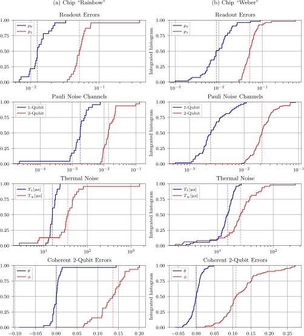
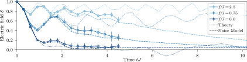
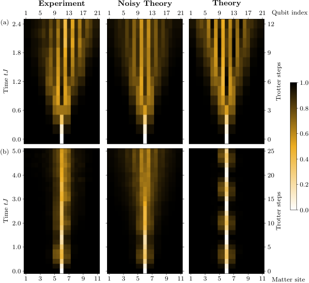
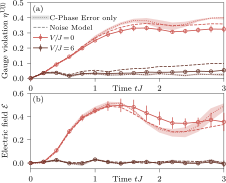
8 ゲージ対称性保護
量子系を目的の対称性に従わせるため、これまでさまざまな方法が開発されてきた。例えば、設計した位相緩和 [67]、擬似ランダムなゲージ変換 [13, 15]、動的デカップリング [14]、ハミルトニアンへの適切なエネルギー罰則の追加 [68, 69, 70, 71, 72, 19, 12] などである。特に実験に適した手法として、線形ゲージ保護の概念がある [12]。これは、ゲージ対称性生成子の重み付き線形和で、大きな強度 をもつ次の項をハミルトニアンに追加するものである。
| (29) |
係数 を適切に選ぶと、ゲージ超選択セクター（ の固有値で定義される）を、有効に量子Zeno部分空間へ変えられる。これらは、少なくとも に比例する時間スケールまで結合しないまま保たれる [73, 74]。
さらに、保存電荷 によって定義される一つの目的ゲージ超選択セクターで計算する場合、そのセクターだけをHilbert空間の残りから分離すれば十分である。係数列 が適合的、すなわち次の条件を満たす場合、
| (30) |
関係式(30)は、異なる物質格子点で の保存を破る過程をどのように組み合わせても、共鳴が起こらないことを保証する。原理的には、この関係を満たすため、係数列 は系サイズとともに指数関数的に増大しなければならない。しかし興味深いことに、ゲージ超選択セクター間を結合する支配的な項によっては、はるかに簡単で適合条件を満たさない係数列でも、関係するすべての時間スケールにわたってゲージ不変性を安定化するのに十分な場合がある [12, 76]。図S8は、16量子ビット（8個の物質格子点、8本のゲージ場リンク）について、非常に単純な係数列 を用いた、本文の図3に対応する結果を示す。この係数列でも、すでに満足できる結果が得られる。本文の図3では、 個の物質格子点からなる系に対して適合的な係数列 を用いる。より大きな系でも、この係数列は、 個の物質格子点にわたる距離の範囲内では、 の保存を破る過程のどのような組み合わせも共鳴しないことを保証する。
式(29)の主要な特徴は、ゲージ対称性生成子 に関して線形の項しか含まないことであり、単一量子ビット項だけによる実装が可能となる。本実装では、これらを既存の項に吸収できるため、実験上の有意な追加コストは生じない。
の適用には、Trotter化に由来する微妙な点がある [12]。原理的には、 ゲージ対称性の精度を高めるため、対応するスケール をできるだけ大きくしたい。しかしTrotter化した操作列では、保護項 は に関して周期的である。そのため、これ以上強くしても保護が改善しなくなる最適強度 が存在する。実装上都合のよいことに、 の周囲の広い の範囲で同程度の性能が得られるため、微調整は不要である [12]。本研究のパラメータでは、 は に近い。重要な点として、図3に示すように、この適度な値でも、近似的な ゲージ対称性を効率的に誘起するのに十分であることが分かった。
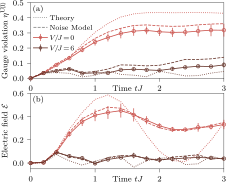
参考文献
文献の同定と検索のため、著者名・論文名・書誌情報は原文表記を保持した。
- [1] C. Gattringer and C. B. Lang, Quantum chromodynamics on the lattice, Vol. 788 (Springer, Berlin, 2010).
- [2] R. Pasechnik and M. Šumbera, Different faces of confinement, Universe 7, 330 (2021).
- [3] J. C. Halimeh, L. Homeier, H. Zhao, A. Bohrdt, F. Grusdt, P. Hauke, and J. Knolle, Enhancing disorder-free localization through dynamically emergent local symmetries, PRX Quantum 3, 020345 (2022a).
- [4] A. S. Aramthottil, U. Bhattacharya, D. González-Cuadra, M. Lewenstein, L. Barbiero, and J. Zakrzewski, Scar states in deconfined lattice gauge theories, Phys. Rev. B 106, L041101 (2022).
- [5] J. C. Halimeh and P. Hauke, Origin of staircase prethermalization in lattice gauge theories (2020a), arXiv:2004.07254 [cond-mat.str-el] .
- [6] D. J. Gross, I. R. Klebanov, A. V. Matytsin, and A. V. Smilga, Screening versus confinement in 1 + 1 dimensions, Nuclear Physics B 461, 109 (1996).
- [7] M. Honda, E. Itou, Y. Kikuchi, L. Nagano, and T. Okuda, Classically emulated digital quantum simulation for screening and confinement in the schwinger model with a topological term, Phys. Rev. D 105, 014504 (2022a).
- [8] J. Berges, M. P. Heller, A. Mazeliauskas, and R. Venugopalan, Qcd thermalization: Ab initio approaches and interdisciplinary connections, Rev. Mod. Phys. 93, 035003 (2021).
- [9] P. Hauke, F. M. Cucchietti, L. Tagliacozzo, I. Deutsch, and M. Lewenstein, Can one trust quantum simulators?, Reports on Progress in Physics 75, 082401 (2012).
- [10] Y. Alexeev, D. Bacon, K. R. Brown, R. Calderbank, L. D. Carr, F. T. Chong, B. DeMarco, D. Englund, E. Farhi, B. Fefferman, A. V. Gorshkov, A. Houck, J. Kim, S. Kimmel, M. Lange, S. Lloyd, M. D. Lukin, D. Maslov, P. Maunz, C. Monroe, J. Preskill, M. Roetteler, M. J. Savage, and J. Thompson, Quantum computer systems for scientific discovery, PRX Quantum 2, 017001 (2021).
- [11] M. C. Bañuls, R. Blatt, J. Catani, A. Celi, J. I. Cirac, M. Dalmonte, L. Fallani, K. Jansen, M. Lewenstein, S. Montangero, C. A. Muschik, B. Reznik, E. Rico, L. Tagliacozzo, K. Van Acoleyen, F. Verstraete, U.-J. Wiese, M. Wingate, J. Zakrzewski, and P. Zoller, Simulating lattice gauge theories within quantum technologies, The European Physical Journal D 74, 165 (2020).
- [12] J. C. Halimeh, H. Lang, J. Mildenberger, Z. Jiang, and P. Hauke, Gauge-symmetry protection using single-body terms, PRX Quantum 2, 040311 (2021).
- [13] H. Lamm, S. Lawrence, and Y. Yamauchi, Suppressing coherent gauge drift in quantum simulations (2020), arXiv:2005.12688 [quant-ph] .
- [14] V. Kasper, T. V. Zache, F. Jendrzejewski, M. Lewenstein, and E. Zohar, Non-abelian gauge invariance from dynamical decoupling, Phys. Rev. D 107, 014506 (2023).
- [15] N. H. Nguyen, M. C. Tran, Y. Zhu, A. M. Green, C. H. Alderete, Z. Davoudi, and N. M. Linke, Digital quantum simulation of the schwinger model and symmetry protection with trapped ions, PRX Quantum 3, 020324 (2022).
- [16] E. A. Martinez, C. A. Muschik, P. Schindler, D. Nigg, A. Erhard, M. Heyl, P. Hauke, M. Dalmonte, T. Monz, P. Zoller, and R. Blatt, Real-time dynamics of lattice gauge theories with a few-qubit quantum computer, Nature 534, 516 (2016).
- [17] H. Bernien, S. Schwartz, A. Keesling, H. Levine, A. Omran, H. Pichler, S. Choi, A. S. Zibrov, M. Endres, M. Greiner, V. Vuletić, and M. D. Lukin, Probing many-body dynamics on a 51-atom quantum simulator, Nature 551, 579 (2017).
- [18] A. Mil, T. V. Zache, A. Hegde, A. Xia, R. P. Bhatt, M. K. Oberthaler, P. Hauke, J. Berges, and F. Jendrzejewski, A scalable realization of local u(1) gauge invariance in cold atomic mixtures, Science 367, 1128 (2020).
- [19] B. Yang, H. Sun, R. Ott, H.-Y. Wang, T. V. Zache, J. C. Halimeh, Z.-S. Yuan, P. Hauke, and J.-W. Pan, Observation of gauge invariance in a 71-site bose–hubbard quantum simulator, Nature 587, 392 (2020).
- [20] N. Klco, E. F. Dumitrescu, A. J. McCaskey, T. D. Morris, R. C. Pooser, M. Sanz, E. Solano, P. Lougovski, and M. J. Savage, Quantum-classical computation of schwinger model dynamics using quantum computers, Phys. Rev. A 98, 032331 (2018).
- [21] Y. Y. Atas, J. F. Haase, J. Zhang, V. Wei, S. M.-L. Pfaendler, R. Lewis, and C. A. Muschik, Simulating one-dimensional quantum chromodynamics on a quantum computer: Real-time evolutions of tetra- and pentaquarks, Phys. Rev. Res. 5, 033184 (2023).
- [22] C. Schweizer, F. Grusdt, M. Berngruber, L. Barbiero, E. Demler, N. Goldman, I. Bloch, and M. Aidelsburger, Floquet approach to z2 lattice gauge theories with ultracold atoms in optical lattices, Nature Physics 15, 1168 (2019).
- [23] Z. Wang, Z.-Y. Ge, Z. Xiang, X. Song, R.-Z. Huang, P. Song, X.-Y. Guo, L. Su, K. Xu, D. Zheng, and H. Fan, Observation of emergent gauge invariance in a superconducting circuit, Phys. Rev. Res. 4, L022060 (2022).
- [24] U. Borla, R. Verresen, F. Grusdt, and S. Moroz, Confined phases of one-dimensional spinless fermions coupled to gauge theory, Phys. Rev. Lett. 124, 120503 (2020).
- [25] M. Kebrič, U. Borla, U. Schollwöck, S. Moroz, L. Barbiero, and F. Grusdt, Confinement induced frustration in a one-dimensional lattice gauge theory, New Journal of Physics 25, 013035 (2023).
- [26] M. Kebrič, L. Barbiero, C. Reinmoser, U. Schollwöck, and F. Grusdt, Confinement and mott transitions of dynamical charges in one-dimensional lattice gauge theories, Phys. Rev. Lett. 127, 167203 (2021).
- [27] M. Heyl, P. Hauke, and P. Zoller, Quantum localization bounds trotter errors in digital quantum simulation, Science Advances 5, eaau8342 (2019).
- [28] K. Chinni, M. H. Muñoz Arias, I. H. Deutsch, and P. M. Poggi, Trotter errors from dynamical structural instabilities of floquet maps in quantum simulation, PRX Quantum 3, 010351 (2022).
- [29] V. Shende, S. Bullock, and I. Markov, Synthesis of quantum-logic circuits, IEEE Transactions on Computer-Aided Design of Integrated Circuits and Systems 25, 1000 (2006).
- [30] F. Arute, K. Arya, R. Babbush, D. Bacon, J. C. Bardin, R. Barends, A. Bengtsson, S. Boixo, M. Broughton, B. B. Buckley, D. A. Buell, B. Burkett, N. Bushnell, Y. Chen, Z. Chen, Y.-A. Chen, B. Chiaro, R. Collins, S. J. Cotton, W. Courtney, S. Demura, A. Derk, A. Dunsworth, D. Eppens, T. Eckl, C. Erickson, E. Farhi, A. Fowler, B. Foxen, C. Gidney, M. Giustina, R. Graff, J. A. Gross, S. Habegger, M. P. Harrigan, A. Ho, S. Hong, T. Huang, W. Huggins, L. B. Ioffe, S. V. Isakov, E. Jeffrey, Z. Jiang, C. Jones, D. Kafri, K. Kechedzhi, J. Kelly, S. Kim, P. V. Klimov, A. N. Korotkov, F. Kostritsa, D. Landhuis, P. Laptev, M. Lindmark, E. Lucero, M. Marthaler, O. Martin, J. M. Martinis, A. Marusczyk, S. McArdle, J. R. McClean, T. McCourt, M. McEwen, A. Megrant, C. Mejuto-Zaera, X. Mi, M. Mohseni, W. Mruczkiewicz, J. Mutus, O. Naaman, M. Neeley, C. Neill, H. Neven, M. Newman, M. Y. Niu, T. E. O’Brien, E. Ostby, B. Pató, A. Petukhov, H. Putterman, C. Quintana, J.-M. Reiner, P. Roushan, N. C. Rubin, D. Sank, K. J. Satzinger, V. Smelyanskiy, D. Strain, K. J. Sung, P. Schmitteckert, M. Szalay, N. M. Tubman, A. Vainsencher, T. White, N. Vogt, Z. J. Yao, P. Yeh, A. Zalcman, and S. Zanker, Observation of separated dynamics of charge and spin in the fermi-hubbard model (2020), arXiv:2010.07965 [quant-ph] .
- [31] K. Temme, S. Bravyi, and J. M. Gambetta, Error mitigation for short-depth quantum circuits, Phys. Rev. Lett. 119, 180509 (2017).
- [32] Y. Li and S. C. Benjamin, Efficient variational quantum simulator incorporating active error minimization, Phys. Rev. X 7, 021050 (2017).
- [33] F. B. Maciejewski, Z. Zimborás, and M. Oszmaniec, Mitigation of readout noise in near-term quantum devices by classical post-processing based on detector tomography, Quantum 4, 257 (2020).
- [34] S. Bravyi, S. Sheldon, A. Kandala, D. C. Mckay, and J. M. Gambetta, Mitigating measurement errors in multiqubit experiments, Phys. Rev. A 103, 042605 (2021).
- [35] P. Czarnik, A. Arrasmith, P. J. Coles, and L. Cincio, Error mitigation with Clifford quantum-circuit data, Quantum 5, 592 (2021).
- [36] A. Strikis, D. Qin, Y. Chen, S. C. Benjamin, and Y. Li, Learning-based quantum error mitigation, PRX Quantum 2, 040330 (2021).
- [37] W. J. Huggins, S. McArdle, T. E. O’Brien, J. Lee, N. C. Rubin, S. Boixo, K. B. Whaley, R. Babbush, and J. R. McClean, Virtual distillation for quantum error mitigation, Phys. Rev. X 11, 041036 (2021).
- [38] T. E. O’Brien, G. Anselmetti, F. Gkritsis, V. E. Elfving, S. Polla, W. J. Huggins, O. Oumarou, K. Kechedzhi, D. Abanin, R. Acharya, I. Aleiner, R. Allen, T. I. Andersen, K. Anderson, M. Ansmann, F. Arute, K. Arya, A. Asfaw, J. Atalaya, J. C. Bardin, A. Bengtsson, G. Bortoli, A. Bourassa, J. Bovaird, L. Brill, M. Broughton, B. Buckley, D. A. Buell, T. Burger, B. Burkett, N. Bushnell, J. Campero, Z. Chen, B. Chiaro, D. Chik, J. Cogan, R. Collins, P. Conner, W. Courtney, A. L. Crook, B. Curtin, D. M. Debroy, S. Demura, I. Drozdov, A. Dunsworth, C. Erickson, L. Faoro, E. Farhi, R. Fatemi, V. S. Ferreira, L. Flores Burgos, E. Forati, A. G. Fowler, B. Foxen, W. Giang, C. Gidney, D. Gilboa, M. Giustina, R. Gosula, A. Grajales Dau, J. A. Gross, S. Habegger, M. C. Hamilton, M. Hansen, M. P. Harrigan, S. D. Harrington, P. Heu, M. R. Hoffmann, S. Hong, T. Huang, A. Huff, L. B. Ioffe, S. V. Isakov, J. Iveland, E. Jeffrey, Z. Jiang, C. Jones, P. Juhas, D. Kafri, T. Khattar, M. Khezri, M. Kieferová, S. Kim, P. V. Klimov, A. R. Klots, A. N. Korotkov, F. Kostritsa, J. M. Kreikebaum, D. Landhuis, P. Laptev, K.-M. Lau, L. Laws, J. Lee, K. Lee, B. J. Lester, A. T. Lill, W. Liu, W. P. Livingston, A. Locharla, F. D. Malone, S. Mandrà, O. Martin, S. Martin, J. R. McClean, T. McCourt, M. McEwen, X. Mi, A. Mieszala, K. C. Miao, M. Mohseni, S. Montazeri, A. Morvan, R. Movassagh, W. Mruczkiewicz, O. Naaman, M. Neeley, C. Neill, A. Nersisyan, M. Newman, J. H. Ng, A. Nguyen, M. Nguyen, M. Y. Niu, S. Omonije, A. Opremcak, A. Petukhov, R. Potter, L. P. Pryadko, C. Quintana, C. Rocque, P. Roushan, N. Saei, D. Sank, K. Sankaragomathi, K. J. Satzinger, H. F. Schurkus, C. Schuster, M. J. Shearn, A. Shorter, N. Shutty, V. Shvarts, J. Skruzny, W. C. Smith, R. D. Somma, G. Sterling, D. Strain, M. Szalay, D. Thor, A. Torres, G. Vidal, B. Villalonga, C. Vollgraff Heidweiller, T. White, B. W. K. Woo, C. Xing, Z. J. Yao, P. Yeh, J. Yoo, G. Young, A. Zalcman, Y. Zhang, N. Zhu, N. Zobrist, D. Bacon, S. Boixo, Y. Chen, J. Hilton, J. Kelly, E. Lucero, A. Megrant, H. Neven, V. Smelyanskiy, C. Gogolin, R. Babbush, and N. C. Rubin, Purification-based quantum error mitigation of pair-correlated electron simulations, Nature Physics 19, 1787–1792 (2023).
- [39] L. Lao, A. Korotkov, Z. Jiang, W. Mruczkiewicz, T. E. O’Brien, and D. E. Browne, Software mitigation of coherent two-qubit gate errors, Quantum Science and Technology 7, 025021 (2022).
- [40] Z.-Y. Zhou, G.-X. Su, J. C. Halimeh, R. Ott, H. Sun, P. Hauke, B. Yang, Z.-S. Yuan, J. Berges, and J.-W. Pan, Thermalization dynamics of a gauge theory on a quantum simulator, Science 377, 311 (2022).
- [41] J. C. Halimeh, H. Lang, and P. Hauke, Gauge protection in non-abelian lattice gauge theories, New Journal of Physics 24, 033015 (2022b).
- [42] K. C. Young, M. Sarovar, and R. Blume-Kohout, Error suppression and error correction in adiabatic quantum computation: Techniques and challenges, Phys. Rev. X 3, 041013 (2013).
- [43] D. E. Gottesman, Stabilizer Codes and Quantum Error Correction (California Institute of Technology, 1997).
- [44] K. S. C. Decker, C. Karrasch, J. Eisert, and D. M. Kennes, Floquet engineering topological many-body localized systems, Phys. Rev. Lett. 124, 190601 (2020).
- [45] A. Smith, B. Jobst, A. G. Green, and F. Pollmann, Crossing a topological phase transition with a quantum computer, Phys. Rev. Res. 4, L022020 (2022).
- [46] D.-W. Wang, C. Song, W. Feng, H. Cai, D. Xu, H. Deng, H. Li, D. Zheng, X. Zhu, H. Wang, S.-Y. Zhu, and M. O. Scully, Synthesis of antisymmetric spin exchange interaction and chiral spin clusters in superconducting circuits, Nature Physics 15, 382 (2019).
- [47] P. Hauke, H. G. Katzgraber, W. Lechner, H. Nishimori, and W. D. Oliver, Perspectives of quantum annealing: methods and implementations, Reports on Progress in Physics 83, 054401 (2020).
- [48] Cirq Developers, Cirq (2023).
- [49] qsim Developers, qsim (2021).
- [50] J. C. Halimeh, V. Kasper, and P. Hauke, Fate of lattice gauge theories under decoherence (2020), arXiv:2009.07848 [cond-mat.quant-gas] .
- [51] J. Schwinger, Gauge invariance and mass. ii, Phys. Rev. 128, 2425 (1962).
- [52] J. Kogut and L. Susskind, Hamiltonian formulation of wilson’s lattice gauge theories, Phys. Rev. D 11, 395 (1975).
- [53] F. M. Surace, P. P. Mazza, G. Giudici, A. Lerose, A. Gambassi, and M. Dalmonte, Lattice gauge theories and string dynamics in rydberg atom quantum simulators, Phys. Rev. X 10, 021041 (2020).
- [54] T. V. Zache, M. Van Damme, J. C. Halimeh, P. Hauke, and D. Banerjee, Toward the continuum limit of a quantum link schwinger model, Phys. Rev. D 106, L091502 (2022).
- [55] U.-J. Wiese, Ultracold quantum gases and lattice systems: quantum simulation of lattice gauge theories, Annalen der Physik 525, 777 (2013).
- [56] S. Coleman, R. Jackiw, and L. Susskind, Charge shielding and quark confinement in the massive Schwinger model, Annals of Physics 93, 267 (1975).
- [57]連続極限が明確に定義されるゲージ理論では、ホッピングと格子間隔 の関係は であり、連続極限 に近づくと摂動論による議論が破綻する可能性がある。ここでは純粋に格子理論の振る舞いに関心がある。
- [58] M. Honda, E. Itou, Y. Kikuchi, and Y. Tanizaki, Negative string tension of a higher-charge Schwinger model via digital quantum simulation, Progress of Theoretical and Experimental Physics 2022, 033B01 (2022b).
- [59] F. Arute, K. Arya, R. Babbush, D. Bacon, J. C. Bardin, R. Barends, R. Biswas, S. Boixo, F. G. S. L. Brandao, D. A. Buell, B. Burkett, Y. Chen, Z. Chen, B. Chiaro, R. Collins, W. Courtney, A. Dunsworth, E. Farhi, B. Foxen, A. Fowler, C. Gidney, M. Giustina, R. Graff, K. Guerin, S. Habegger, M. P. Harrigan, M. J. Hartmann, A. Ho, M. Hoffmann, T. Huang, T. S. Humble, S. V. Isakov, E. Jeffrey, Z. Jiang, D. Kafri, K. Kechedzhi, J. Kelly, P. V. Klimov, S. Knysh, A. Korotkov, F. Kostritsa, D. Landhuis, M. Lindmark, E. Lucero, D. Lyakh, S. Mandrà, J. R. McClean, M. McEwen, A. Megrant, X. Mi, K. Michielsen, M. Mohseni, J. Mutus, O. Naaman, M. Neeley, C. Neill, M. Y. Niu, E. Ostby, A. Petukhov, J. C. Platt, C. Quintana, E. G. Rieffel, P. Roushan, N. C. Rubin, D. Sank, K. J. Satzinger, V. Smelyanskiy, K. J. Sung, M. D. Trevithick, A. Vainsencher, B. Villalonga, T. White, Z. J. Yao, P. Yeh, A. Zalcman, H. Neven, and J. M. Martinis, Quantum supremacy using a programmable superconducting processor, Nature 574, 505 (2019).
- [60] F. Yan, P. Krantz, Y. Sung, M. Kjaergaard, D. L. Campbell, T. P. Orlando, S. Gustavsson, and W. D. Oliver, Tunable coupling scheme for implementing high-fidelity two-qubit gates, Phys. Rev. Appl. 10, 054062 (2018).
- [61] B. Foxen, C. Neill, A. Dunsworth, P. Roushan, B. Chiaro, A. Megrant, J. Kelly, Z. Chen, K. Satzinger, R. Barends, F. Arute, K. Arya, R. Babbush, D. Bacon, J. C. Bardin, S. Boixo, D. Buell, B. Burkett, Y. Chen, R. Collins, E. Farhi, A. Fowler, C. Gidney, M. Giustina, R. Graff, M. Harrigan, T. Huang, S. V. Isakov, E. Jeffrey, Z. Jiang, D. Kafri, K. Kechedzhi, P. Klimov, A. Korotkov, F. Kostritsa, D. Landhuis, E. Lucero, J. McClean, M. McEwen, X. Mi, M. Mohseni, J. Y. Mutus, O. Naaman, M. Neeley, M. Niu, A. Petukhov, C. Quintana, N. Rubin, D. Sank, V. Smelyanskiy, A. Vainsencher, T. C. White, Z. Yao, P. Yeh, A. Zalcman, H. Neven, and J. M. Martinis (Google AI Quantum), Demonstrating a continuous set of two-qubit gates for near-term quantum algorithms, Phys. Rev. Lett. 125, 120504 (2020).
- [62] Google AI Quantum and Collaborators, F. Arute, K. Arya, R. Babbush, D. Bacon, J. C. Bardin, R. Barends, S. Boixo, M. Broughton, B. B. Buckley, D. A. Buell, B. Burkett, N. Bushnell, Y. Chen, Z. Chen, B. Chiaro, R. Collins, W. Courtney, S. Demura, A. Dunsworth, E. Farhi, A. Fowler, B. Foxen, C. Gidney, M. Giustina, R. Graff, S. Habegger, M. P. Harrigan, A. Ho, S. Hong, T. Huang, W. J. Huggins, L. Ioffe, S. V. Isakov, E. Jeffrey, Z. Jiang, C. Jones, D. Kafri, K. Kechedzhi, J. Kelly, S. Kim, P. V. Klimov, A. Korotkov, F. Kostritsa, D. Landhuis, P. Laptev, M. Lindmark, E. Lucero, O. Martin, J. M. Martinis, J. R. McClean, M. McEwen, A. Megrant, X. Mi, M. Mohseni, W. Mruczkiewicz, J. Mutus, O. Naaman, M. Neeley, C. Neill, H. Neven, M. Y. Niu, T. E. O’Brien, E. Ostby, A. Petukhov, H. Putterman, C. Quintana, P. Roushan, N. C. Rubin, D. Sank, K. J. Satzinger, V. Smelyanskiy, D. Strain, K. J. Sung, M. Szalay, T. Y. Takeshita, A. Vainsencher, T. White, N. Wiebe, Z. J. Yao, P. Yeh, and A. Zalcman, Hartree-fock on a superconducting qubit quantum computer, Science 369, 1084 (2020).
- [63] A. T. K. Tan, S.-N. Sun, R. N. Tazhigulov, G. K.-L. Chan, and A. J. Minnich, Realizing symmetry-protected topological phases in a spin-1/2 chain with next-nearest-neighbor hopping on superconducting qubits, Phys. Rev. A 107, 032614 (2023).
- [64] L. M. Sieberer, T. Olsacher, A. Elben, M. Heyl, P. Hauke, F. Haake, and P. Zoller, Digital quantum simulation, trotter errors, and quantum chaos of the kicked top, npj Quantum Information 5, 78 (2019).
- [65] C. Kargi, J. P. Dehollain, F. Henriques, L. M. Sieberer, T. Olsacher, P. Hauke, M. Heyl, P. Zoller, and N. K. Langford, Quantum chaos and universal trotterisation performance behaviours in digital quantum simulation, in Quantum Information and Measurement VI 2021 (Optica Publishing Group, 2021) p. W3A.1.
- [66] S. Lloyd, Universal quantum simulators, Science 273, 1073 (1996).
- [67] K. Stannigel, P. Hauke, D. Marcos, M. Hafezi, S. Diehl, M. Dalmonte, and P. Zoller, Constrained dynamics via the zeno effect in quantum simulation: Implementing non-abelian lattice gauge theories with cold atoms, Phys. Rev. Lett. 112, 120406 (2014).
- [68] E. Zohar and B. Reznik, Confinement and lattice quantum-electrodynamic electric flux tubes simulated with ultracold atoms, Phys. Rev. Lett. 107, 275301 (2011).
- [69] D. Banerjee, M. Dalmonte, M. Müller, E. Rico, P. Stebler, U.-J. Wiese, and P. Zoller, Atomic quantum simulation of dynamical gauge fields coupled to fermionic matter: From string breaking to evolution after a quench, Phys. Rev. Lett. 109, 175302 (2012).
- [70] E. Zohar, J. I. Cirac, and B. Reznik, Simulating ()-dimensional lattice QED with dynamical matter using ultracold atoms, Phys. Rev. Lett. 110, 055302 (2013).
- [71] O. Dutta, L. Tagliacozzo, M. Lewenstein, and J. Zakrzewski, Toolbox for abelian lattice gauge theories with synthetic matter, Phys. Rev. A 95, 053608 (2017).
- [72] J. C. Halimeh and P. Hauke, Reliability of lattice gauge theories, Phys. Rev. Lett. 125, 030503 (2020b).
- [73] P. Facchi and S. Pascazio, Quantum zeno subspaces, Phys. Rev. Lett. 89, 080401 (2002).
- [74] J. C. Halimeh, H. Zhao, P. Hauke, and J. Knolle, Stabilizing disorder-free localization (2022c), arXiv:2111.02427 [cond-mat.dis-nn] .
- [75] D. Abanin, W. De Roeck, W. W. Ho, and F. Huveneers, A rigorous theory of many-body prethermalization for periodically driven and closed quantum systems, Communications in Mathematical Physics 354, 809 (2017).
- [76] M. Van Damme, H. Lang, P. Hauke, and J. C. Halimeh, Reliability of lattice gauge theories in the thermodynamic limit, Phys. Rev. B 107, 035153 (2023).